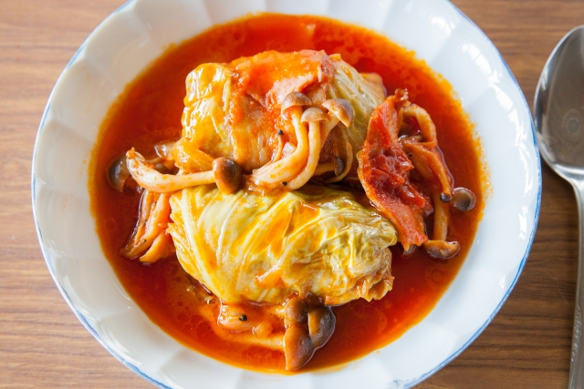

ロールキャベツ

材料
（２～３人分）
- ・トマト・・・・・・・・・・・１玉
- ・合いびき肉・・・・・・・・1/2個
- ・玉ねぎ・・・・・・・・・・300g
- ・キャベツ・・・・・・・・・3/4玉
- ◇コンソメ・・・・・・・・小さじ2
- ◇塩コショウ・・・・・・・・・適量
- ◇ローリエ・・・・・・・・・・１枚
作り方
- １.
玉ねぎをみじん
切りにし、軽く
炒めて冷まして
おく。 - ２.
キャベツを洗い、
レンジ対応の器に
移す。器に少し水
を入れ、ラップを
かけて電子レンジ
でチンをする。 - ３.
ひき肉と冷ました
玉ねぎを合わせて
こねる。軽く塩コ
ショウをふる。 - ４.
柔らかくなった
キャベツの葉で
③をつつむ。 - ５.
④で作ったものを
鍋に詰めていく。
そこにトマトと
◇の材料を入れる
詰めたものが浸る
くらいまで水を
入れる。 - ６.
中火でひと煮立ち
させ、弱火で
１５分煮る。